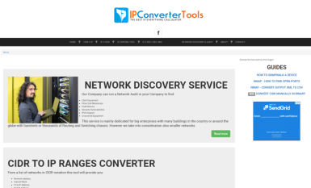
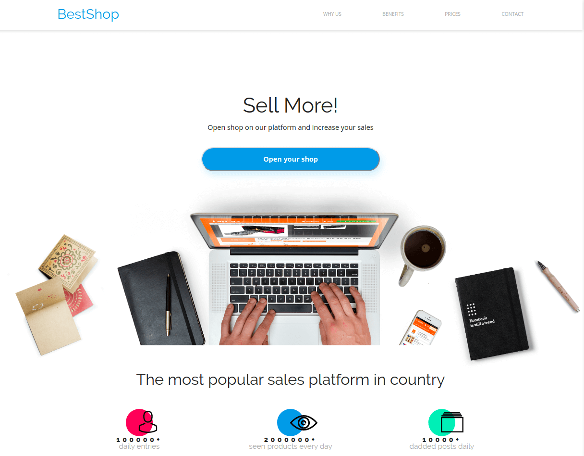

Javascript: React developer
O mnie
We wrześniu 2019 zdecydowałem się zdobyć wiedzę specjalistyczną i zostać programistą. Zacząłem codziennie intensywnie studiować programowanie.
W październiku / listopadzie uczęszczam na 2-miesięczny intensywny kurs JavaScript i React 434 godziny w Coders Lab.
Zawsze osiągałem wielkie sukcesy na każdej zajmowanej wcześniej pozycji. Jednak od około 10 lat pracowałem z HTML i CSS i zawsze chciałem być dobrym programistą JavaScript. Teraz podjąłem odważną decyzję, aby głęboko wejść do świata programowania i osiągnąć swój cel, zaczynając od zera. Kurs Coders Lab zakończy się pod koniec listopada 2019. Jestem gotowy rozpocząć nową pracę jako Junior Front-End Developer od 1 grudnia 2019 i zacząć realizować projekty komercyjne, jednocześnie ucząc się krok po kroku, aby zostać ekspertem w niedalekiej przyszłości.
Moje projekty Front-End
Huge visual changes and converted Celebritypress theme from XHTML to HTML5, used to rank #1 - #3 for ca. 2 years when the client was active. I stopped working on this project in 2017. From time to time little maintenance, upgrades, etc.
Stworzyłem jedno z najpopularniejszych narzędzi dla networkowców. Tylko nie jestem autorem kodu python do konwersji. Kiedy tool już działał poprawnie mocno pracowałem pod kątem SEO, żeby zwiększyć ranking strony w Google. Dzięki doświadczeniom w optymalizacji i narzędziach SEO, udało się w dosyć szybkim czasie.
Adres do strony Ip Converter Tools: www.ipconvertertools.com
Portal biznesowy promujący usługę, która dzięki swoim funkcjonalnościom pomoże firmom w zwiększyć przychody ze sprzedaży.
{kind=link}
100% Kodowane przeze mnie na podstawie projektu graficznego Adobe XD.